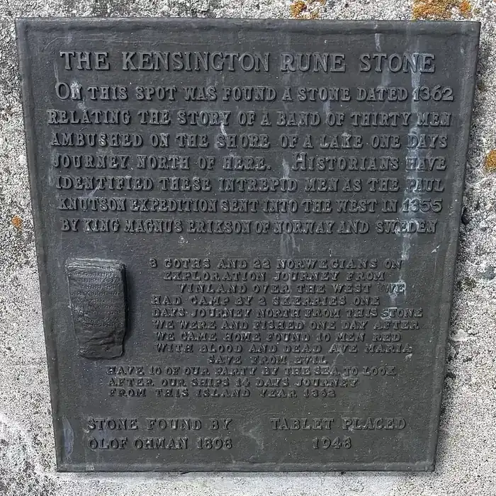
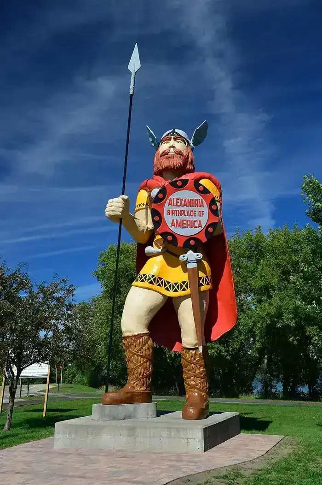
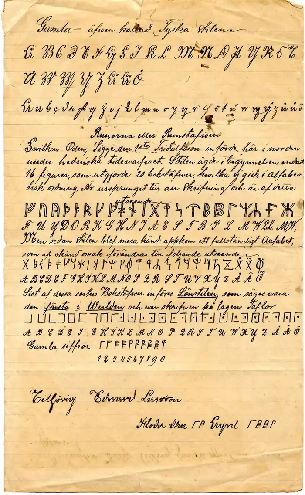

The find
In 1898 Olof Öhman, a Swedish immigrant farmer in Kensington, Minnesota, found a slab of greywacke tangled in the roots of an aspen. The inscription, in runes, purported to record a party of eight Goths and twenty-two Norwegians who had reached that place in 1362, and whose members had been killed while the survivors were out fishing.
Maps, diagrams and images






The claim is not absurd on its face: the Norse reached Newfoundland around 1000, and a fourteenth-century expedition inland is not physically impossible. That is why the stone has defenders.
The linguistic evidence
The decisive objections are philological. The inscription uses runic forms and spellings that belong to nineteenth-century Dalecarlian and to modern Swedish, not to fourteenth-century Norse. Several words are anachronistic; the grammar shows constructions that appear in later Swedish; and the rune forms themselves include characters that were not in use in 1362.
The historical context is equally suggestive. The stone appeared at a moment when Scandinavian-Americans were arguing for a Norse claim on the continent, and Öhman had both the runic knowledge and the motive. A 2003 investigation by Swedish linguists found the inscription consistent with a nineteenth-century forger working from an almanac.
Documented: the stone was found in 1898 and bears an inscription in runes.
Documented: its language, orthography and rune forms are nineteenth-century Swedish, not fourteenth-century Norse.
Not supported: the 1362 expedition. No other artefact, site or document supports it.
Defenders: a small amateur literature continues to argue for authenticity; no peer-reviewed runologist supports it.
Why it matters: it is the clearest case of a forgery that would be harmless if it were not used to argue about who belongs where.
Why it is in the archive
Because it shows what a debunked claim looks like when the debunking is technical rather than dramatic: no confession, no court case, just a hundred years of specialists agreeing about grammar while a popular literature continues to cite the stone.
Open resources on this topic
- BookThe Kensington runestone : a reappraisal of the circumstances under which the stone was discovered — Landsverk, O. G. (Ole Godfred), 1901- · 1961 (Internet Archive, free to read)
- BookThe Kensington runestone : approaching a research question holistically — Kehoe, Alice Beck, 1934- · 2005 (Internet Archive, free to read)
- BookDotted Runes What Are They And What Significance do they have for the dating of the Kensington Runestone — Henrik Williams (Internet Archive, free to read)
- PapersOpen-access articles: DOAJ · PubMed Central · Internet Archive Scholar
- BooksPublic-domain and borrowable copies: Open Library · Project Gutenberg · Google Books
More images
Cite this page
Momin, S. (2026). The Kensington Runestone. The Larger World Archive. https://drsamonline.github.io/LARGE_GLOBE/kensington-runestone.htmlMomin, Sohil. “The Kensington Runestone.” The Larger World Archive, 2026, https://drsamonline.github.io/LARGE_GLOBE/kensington-runestone.html.Momin, Sohil. “The Kensington Runestone.” The Larger World Archive, 2026. https://drsamonline.github.io/LARGE_GLOBE/kensington-runestone.html.@misc{the2026kensington,
author = {Momin, Sohil},
title = {The Kensington Runestone},
year = {2026},
howpublished = {The Larger World Archive},
url = {https://drsamonline.github.io/LARGE_GLOBE/kensington-runestone.html},
note = {Last reviewed 20 November 2026}
}Last reviewed 20 November 2026 · Corrections policy · this page is not peer reviewed
Sources for this page
- Wikipedia, “Kensington Runestone” — the find, the claim and the philologyen.wikipedia.org
- Wikipedia, “Runestone” — what genuine Norse inscriptions look likeen.wikipedia.org
- Wikipedia, “Dalecarlian runes” — the later tradition the inscription resemblesen.wikipedia.org
- Wikipedia, “Norse colonization of North America” — what is actually attesteden.wikipedia.org